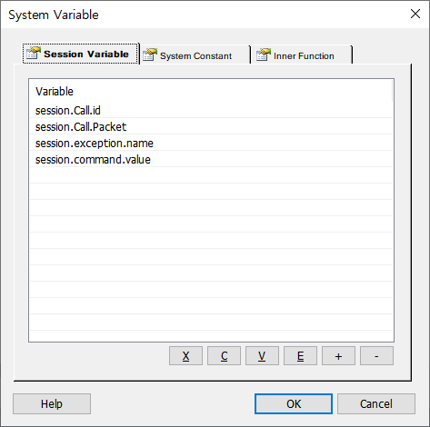
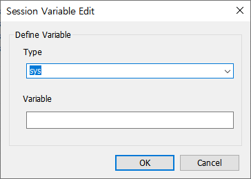
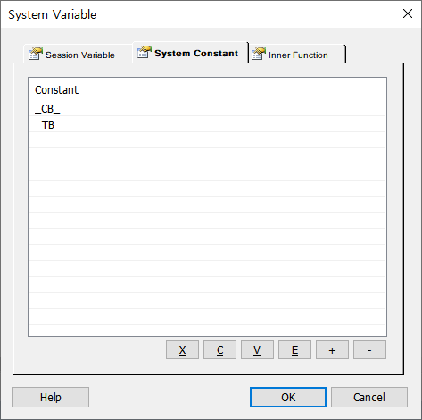
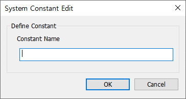
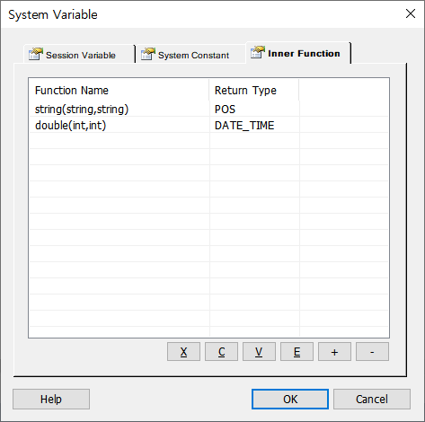
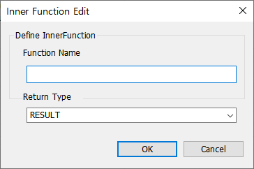

시스템 변수 Define 기능
세션변수, 시스템상수, 내장함수를 Registry에 추가하여 신규 세션변수 Roading 처리 기능
* ForCus v5.3.1 이상 지원
PROPERTIES
 Session Variable
Session Variable

등록할 세션변수를 입력 합니다.
X Button : 선택한 리스트를 잘라냅니다.(Ctrl+X)
C Button : 선택한 리스트의 내용을 복사 합니다.(Ctrl+C)
V Button : 복사한 리스트의 내용을 붙여넣기 합니다.(Ctrl+V)
E Button : 선택한 변수의 내용을 수정 합니다.
+ Button : 세션변수 하나를 추가 합니다.
- Button : 선택한 세션변수를 삭제 합니다.

Type 에는 10개의 타입(call,command,cti, daemon, exception, menu, sys, sip, vr, lib) 제공되며 Variable에 변수를 등록합니다.
 System Constant
System Constant

시스템 상수를 입력 합니다.
X Button : 선택한 리스트를 잘라냅니다.(Ctrl+X)
C Button : 선택한 리스트의 내용을 복사 합니다.(Ctrl+C)
V Button : 복사한 리스트의 내용을 붙여넣기 합니다.(Ctrl+V)
E Button : 선택한 상수의 내용을 수정 합니다.
+ Button : 시스템 상수 하나를 추가 합니다.
- Button : 선택한 시스템 상수를 삭제 합니다.

상수 이름을 입력합니다.
 Inner Function
Inner Function

내장함수를 등록합니다.
X Button : 선택한 리스트를 잘라냅니다.(Ctrl+X)
C Button : 선택한 리스트의 내용을 복사 합니다.(Ctrl+C)
V Button : 복사한 리스트의 내용을 붙여넣기 합니다.(Ctrl+V)
E Button : 선택한 내장함수의 내용을 수정 합니다.
+ Button : 내장함수 하나를 추가 합니다.
- Button : 선택한 내장함수를 삭제 합니다.

Return Type 에는 타입(INT_NUMBER,NUMBER,OUTPUT_STR, POS, RESULT, LEN) 등 15개가 제공되며 Variable에 변수를 등록합니다.